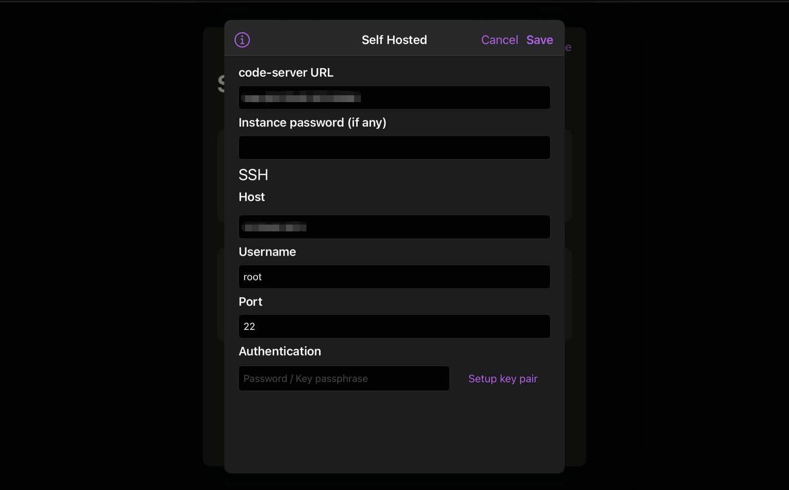
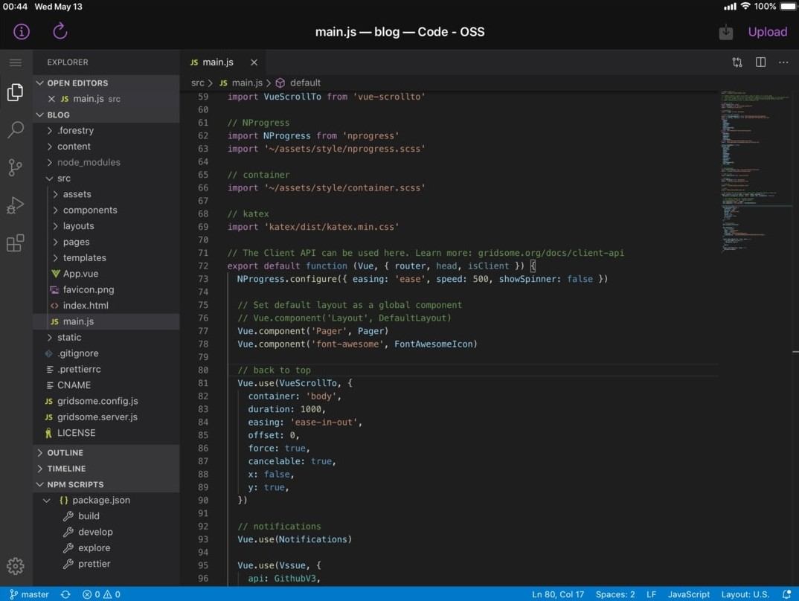

自己动手搭建云端IDE
本文最后更新于：2020年11月7日 晚上
基于 code-server 搭建一个云端 VS Code，随时随地在浏览器上 Coding
介绍
最近突然想试 GitHub Codespaces，无奈测试资格永远在等待。Visual Studio Codespaces(原 Visual Studio Online)需要付费。Coding以前用过还是类似 Idea 的版本，现在变成类似 vscode 的样子，应该还是不错的（我选择 GitHub Codespaces）。
偶然情况下我发现了开源的 cdr/code-server，只需拥有一台自己的服务器即可实现属于自己的云端 IDE。
准备
服务器
我用的是阿里云的学生鸡（1 核 2G，2G 内存，40G 硬盘，1M 带宽）
下载 tar.gz
国外或港澳台地区的 vps 可以跳过这一步
下载最新版的 code server 文件，如code-server-3.4.1-linux-x86_64.tar.gz
开始搭建
1.登陆 vps
通过 SSH 远程连接服务器或 VNC 登陆
2.上传 tar.gz
各显神通的环节，sftp、pscp…… 我是直接在宝塔面板上传的。
国外或港澳台地区的 vps 直接执行以下代码下载 tar.gz（版本号自行修改成最新版本）
wget https://github.com/cdr/code-server/releases/download/3.4.1/code-server-3.4.1-linux-x86_64.tar.gz3.解压 tar.gz
tar xf code-server-3.4.1-linux-x86_64.tar.gz3.安装配置
# 进入解压后的目录
cd code-server-3.1.1-linux-x86_64
# 设置一个登陆密码
export PASSWORD="mypassowrd"
# 由于code-server默认只能够监听本地地址，也就是 127.0.0.1
# 指定监听地址、监听端口并执行code-server
./code-server --host 0.0.0.0 --port 80804.服务器防火墙配置
进入阿里云实例安全组，将 8080 端口打开。
5.测试
在浏览器中输入 {服务器 IP 地址}:{code-server 端口}，并输入刚才设置的密码，进入属于自己的云端 vscode
安装 vscode 常用插件，如简体中文语言包等。
One more thing
由于在 Safari 浏览器中使用体验比较糟糕，因此通过一款专门为iPad优化的ios应用Servediter(原 VSApp)来实现在iPad上流畅的云端IDE体验。
servediter分为付费和免费，搭建在自己服务器上的code server只需要使用免费服务即可。
登陆配置
直接选择菜单中的 Self Hosted Server，然后根据要求填写刚才部署的code-server相关信息。

效果

总结
在配合servediter使用的条件下，延迟问题不严重。我认为最大的问题还是受制于vps的性能。在和同类产品对比的情况下，code-server的生产力属性相对逊色，我更倾向于把他当成多平台的笔记类应用，支持vscode的大部分插件、使用自己的vps保障了隐私、用浏览器就能登录使用也足够方便。而如果用于编程，我觉得有点南辕北辙，毕竟专业的事交给更专业的工具去做更好。
参考文章
本博客所有文章除特别声明外，均采用 CC BY-SA 4.0 协议 ，转载请注明出处！